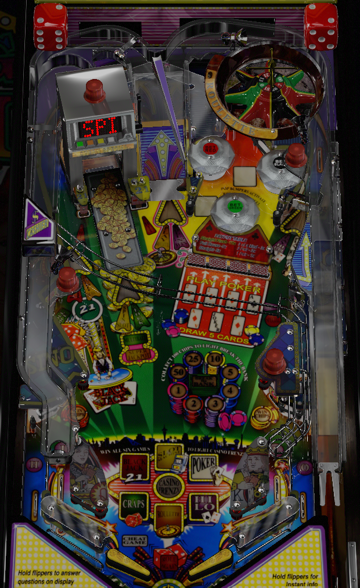

For quick points or as a strong basic strategy, try to always be in multiball. Bash the left ramp to open it for a Slot Machine spin, then spin the Slot to light a lock; lock 3 balls for multiball. In multiball, major shots score single, then double, then triple jackpots; collecting the Slot's triple jackpot lights it for Super Jackpot, which can be a 5x, 15x, 30x, or 50x jackpot depending on the number of other triple jackpots scored.
To make game progress toward wizard modes, play casino games for chips- left target for Craps, post targets and left orbit for Blackjack, left ramp for Slots, bumpers and center ramp for Roulette, drop targets and right orbit for Poker, bottom lanes and right orbit for Hi-Lo. Complete all 6 games for Casino Frenzy mini-wizard mode; win games to earn chips toward Break the Bank wizard mode as well.
A full plunge sends the ball into the roulette wheel in the back-right of the game. Each time the ball makes a complete lap of the roulette wheel scores 25,000 points. Landing in red, black, or green awards 5 bonus multipliers, 5,000,000 points, or 5 chips respectively. Making a skill shot also increases the value of that colour for future skill shots, up to a maximum of 10 bonus X, 10,000,000 points, or 10 chips. Collecting a maxed out skill shot for the first time scores 25,000,000 points. Skill shots are available at the start of any ball (including extra balls) or after locking a ball toward Slot Machine Multiball.
Six casino games are present around the playfield. Most of them require qualifying the game with a certain shot, then playing the game with another. The first casino game you win is worth 15,000,000 points; each casino game won after that is worth 1,000,000 more than the previous, with a limit of no lower than 26,000,000. The completion bonus is not awarded if the casino game you won is already lit on the playfield as progress toward Casino Frenzy. I am not sure what measures are put in place, if any, to help ensure a guaranteed minimum win rate at the casino games for tournament play.
Craps: Hit the middle left standup target to roll the dice. If you roll 7 or 11, you win instantly. If you roll 2, 3, or 12, you lose instantly. Anything else becomes a "point". If a point is set, you lose if you roll a 7, and you win if you re-roll the point number before getting a 7. The game usually forces one or the other to happen after about five rolls. 5 chips and 5,000,000 points for winning.
Blackjack/21: Hit the post targets on either side of the left ramp (slot machine) to receive Blackjack cards. Once you have at least 2 cards, shoot the left orbit to play against the dealer. It is possible to bust before shooting the left orbit if the cards you receive from post targets bring your hand total over 21. Beating the dealer wins the game, awarding 5 chips and 5,000,000 points, plus the completion bonus if Blackjack was not already lit in the center of the table. Busting or losing to the dealer loses 5 chips.
Slot Machine: Shoot the left ramp to open the Slot Machine, then shoot the ramp again to spin the slots. Any combination that awards chips counts as a win on Slot Machine toward Casino Frenzy. The pay table for slot machine is listed below and on the game's instruction card. After spinning the slots, whether they were won or not, the left ramp is available to lock a ball toward Slot Machine Multiball, explained later in the guide.
If Slot Machine Multiball has already been played, the slot machine may need to be hit one or more times before it will open up to allow an actual spin of the reels. If this is the case, hitting the closed Slot Machine entrance starts a hurry-up, which begins at 999,000 and counts down quickly to 500,000. The value can be multiplied by hitting the closed slot machine repeatedly within the time limit up to the point where it opens for a spin of the slots.
Roulette: Pop bumpers score the bumper value, which starts each ball at 10,000 points and increases by 2,500 with each left orbit shot, up to a maximum of 50,000 points. Hitting 20 bumpers lights a colour, which rotates each time a bumper is hit. If you continue to hit pop bumpers instead of playing roulette right away, another set of 20 bumpers will light a second colour, and 20 further bumper hits will light a third colour, making it easier or guaranteed to win once you shoot the center ramp. Also, the bumper value gets multiplied by 2, 3, or 4 respectively once 1, 2, or all 3 colours are lit for a roulette bet. Once a roulette bet is in place, shooting the center ramp will send the ball to the roulette wheel, with bets placed on the currently lit colour(s). If the ball lands in the hole of a bet colour, you win 5,000,000 points and 5 chips (or 7,500,000 points and 10 chips if the successful bet was on Green). If the ball lands in a wrong colour, you lose 3 chips. Whether you win or lose, the bumper progress is reset, and to try again you will need to hit 20 bumpers to light one colour and requalify roulette at all.
Poker: The Poker targets are midway up the table, just to the right of horizontal center. They consist of 4 drop targets, and 3 standup targets behind those. Hit any 5 of the targets to form a 5-card poker hand, then play poker against the dealer at the right orbit. The drop targets award a 2, a 2, a 4, and and Ace from left to right; the standup targets award an Ace, a Joker, and a 3. For the best chance to win, shoot the two middle drop targets, then hit the three standup targets behind them without hitting the outer two drop targets for a Straight Flush hand. Beating the dealer scores 5,000,000 points and 5 chips; losing deducts 5 chips.
Hi-Lo: Roll through a bottom in/out lane to light it. Use lane change with either flipper to rotate which lanes are lit. Light all 4 lanes to spell Hi-Lo and qualify a game of Hi-Lo at the right orbit. For the first time playing Hi-Lo, the left in/out lane might be tied together, and same on the right side, so that there are effectively only 2 lanes to light instead of 4. Shooting the right orbit starts Hi-Lo. You are shown a playing card and have to guess if next card is higher or lower. Aces are always high. After an incorrect guess, the game ends. After a correct guess, you will be given the option to walk away and keep your winnings, or guess the next card for double or nothing. Walking away after one correct guess scores 2 chips and 2,500,000 points; the first two double or nothings means an award of 8 chips and 10,000,000 points. Rather than doubling the award a third time, getting the last card correct is worth an additional 5 chips and 5,000,000 points. Hi-Lo is considered to be won if you walk away with any amount of chips and points, even if it's just one correct guess.
Casino Frenzy mini wizard mode: After getting a win in all 6 casino games, shoot any major shot to start Casino Frenzy, a 4-ball mini wizard mode multiball. All 6 games have a way to light and score a jackpot, which serve as an accelerated version of how the casino games work in normal gameplay.
Lighting a jackpot is worth 1,000,000 points. Scoring a jackpot is worth 5,000,000 points, and increases the value of the next jackpot by 100,000, up to a maximum of 10,000,000. Collecting one of each type of jackpot lights the center ramp for Super Jackpot, which is worth 100,000,000 the first time and increases by 25,000,000 each subsequent time. I am not aware of a max value for this super jackpot. The regular jackpot and super jackpot values in Casino Frenzy are held in memory throughout the game, so if you get to Casino Frenzy a second time, the jackpot values start where they left off. When single ball play resumes, Casino Frenzy ends, and the six casino games in the center of the table unlight, allowing you to work toward Casino Frenzy and collect completion bonuses again.
Cheat Game: this is not a casino game in itself, but it is a way to help get credit for other casino games. At 5, 15, 25, 35... ramp shots, a Cheat Game is awarded. (Extra ball is also lit at 60 ramps.) The center ramp always counts for this total; the left ramp only counts when a ball is being locked. If you have a Cheat Game, then the next time you would lose any of the 6 main casino games, the game will be rigged so that you win instead. If you won the casino game naturally or had credit for a casino game spotted, the Cheat Game is not used. Cheat Game can be used on games that are already lit on the playfield as completed progress toward Casino Frenzy, which is somewhat of a waste. Cheat Games are very helpful to have ready for Craps and Poker, especially.
Using a Cheat Game on Roulette will flick the ball into a colour that was bet on, with a preference toward green where possible. Cheat Game on Hi-Lo will turn an incorrect choice into a correct one, but also instantly ends the game without allowing additional double or nothings.
Skill shots into green spaces of the roulette wheel score between 5 and 10 chips. Winning casino games usually gives 5 chips, but roulette and hi-lo can give more. Losing casino games usually deducts 3-5 chips. The lower left and right standup targets add 1 chip each. Chips are worth 10,000 points in base bonus. Reaching 100 chips qualifies Break the Bank wizard mode, which can be started at any major shot in the game.
Break the Bank is a 4-ball multiball. In Break the Bank, the left ramp constantly raises and lowers. Standard jackpots are available at the orbits, the center ramp, and the lowered left ramp. Super jackpot is immediately available at the raised left ramp. Jackpots start at 7,500,000 points, increase by 500,000 each time one is collected, and are lit at all times, with the exception of the shot most recently made to collect a jackpot. The super jackpot starts at 10,000,000 points, and increases by the value of any collected regular jackpot. Collecting a super jackpot will keep the ramp lowered, and the super jackpot value can now be recollected at all 4 major shots. Once all super jackpots have been recollected, the entire process restarts, with the super jackpot having a base value of 2,500,000 higher than the last time around and regular jackpot values being reset to 7,500,000. The super jackpot can be raised to over 100,000,000 points, so there's a lot of high risk and high reward involved in deciding how much to play this mode.
Once multiball ends, 100 chips are subtracted from your total on the table, so that you can work toward a possible 200 and play Break the Bank again; your end of ball bonus calculation can go over 100 chips even after playing Break the Bank.
As described above, playing the Slot Machine opens the left ramp for a lock. Locking a ball is the only time at which the left ramp will increase the ramp counter toward Cheat Games. Locking 3 balls starts Slot Machine Multiball.
Slot Machine Multiball is a 4-ball mode. There is no restart available, even if multiball ends before a jackpot is earned, but there is a generous ball save. The jackpot value starts at 2,000,000 points and increases by 2,500 with each bumper and slingshot hit during multiball. Jackpots are available at the four major shots- two orbits and two ramps. The first three times a shot is made score a single, double, and triple jackpot respectively. For the center ramp and the orbits, after collecting the triple jackpot, further shots just score a single jackpot. For the left ramp, after making the triple jackpot, a super jackpot is available. The value of the super jackpot is dependent on how many of the other three triple jackpots have been collected:
Triple jackpots can continue to be collected to boost the Super Jackpot value, even after the Super Jackpot has been qualified. Collecting the Super Jackpot restarts the entire multiball sequence.
The middle right standup target qualifies Roll and Win at the center ramp. Roll and Win takes priority at the center ramp over Roulette, but cannot be played during any multiball. Shooting the center ramp when Roll and Win is lit starts the backbox game. Two dice will roll, and the flippers are used to pick one: the die that you pick determines how many spaces you move clockwise on the Roll and Win board game on the backglass. (If both dice roll the same number, the game moves for you.)
From Start and going clockwise, the Roll and Win awards are:
Completing a lap of the Roll and Win board and passing Start immediately starts the next Super feature listed. The first three Super features seem to last about 60 seconds, unless the ball in play drains; if you land on Start exactly, the game says the Super feature will last for 50% longer, which would be 90 seconds instead, but it's difficult to verify these time values because the game doesn't announce or display them anywhere.
The ATM bonus starts at 750,000 points. Every time a bumper is hit, the ATM bonus is increased by the current bumper value. If Roulette is lit, the bumper value is multiplied for the score, but the ATM bonus is still only increased by the base bumper value. The ATM value maxes out at 2,500,000 points. Rolling through an in lane lights the opposite orbit's large white arrow for about 5 seconds. Shooting the orbit when lit scores the current ATM value and resets the timer. Making the orbit additional times before it times out recollects the ATM value, with a multiplier that increases by 1 each time. The limit for the ATM value multiplier is at least 3. Once the ATM value has been scored at least once, it will reset back to 750,000 when the lit orbit(s) time out.
High Roller Casino has a conventional in/out lane setup. The in lanes light the opposite orbits to collect the ATM bonus, and the four lanes combine to spell Hi-Lo, where lighting all four (with lane change available) qualifies a game of Hi-Lo on the right orbit. By default, there is a center post between the flippers, which is very helpful for defending against the return from a rejected left ramp. The rubber walls on either side of the table above the Win Chips targets are proper slingshots that throw the ball away just like the ones that form the in lanes near the flippers.
End of ball bonus has three components:
These are all multiplied by the bonus multiplier. Bonus multiplier is advanced by red skill shots, the Bonus X award on Roll and Win, or by hitting the right orbit spinner enough times. At first, the spinner usually needs about 5 spins to award a bonus multiplier, but I've seen this be as high as 15 spins once the multiplier gets increased a lot. Max bonus multiplier is at least 26x. End of ball bonus generally has okay-but-not-great value relative to scoring in normal play.

All copyrighted names and terms in this document belong to their respective owners. The information provided in this document is for educational purposes only and no infringement is intended.
Back to top To game list To main page